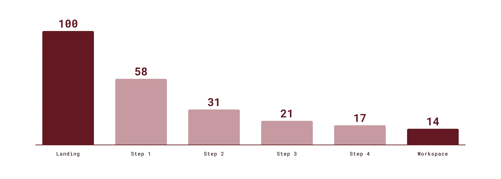
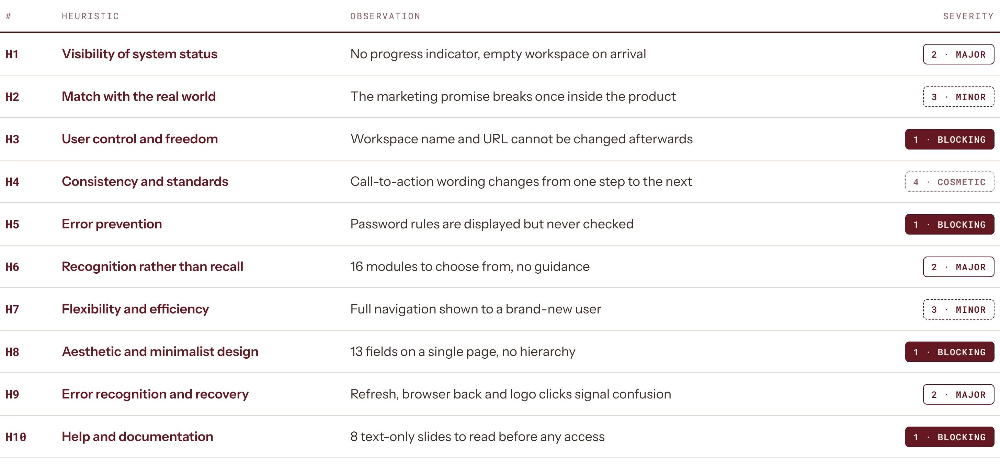
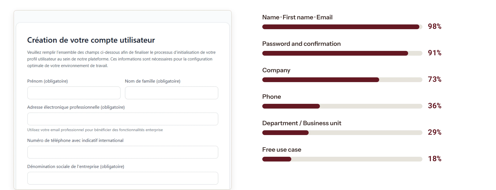
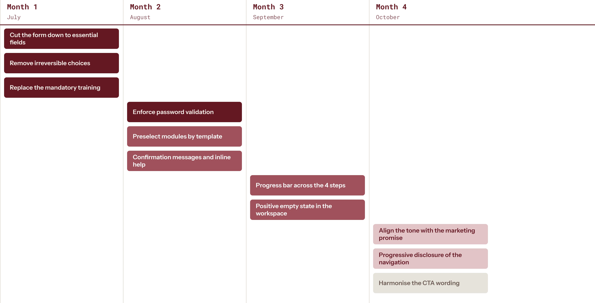

Flowrate
UX audit and four-month roadmap
Understanding why 86% of users drop out of the onboarding process, and a four-month plan to address the issue.
Context and challenge
Flowrate is a B2B time-management SaaS used by more than 5,000 teams. Its landing page converts well, but the four-step onboarding loses almost everyone: only 14% of the users who click “Get started” reach the product. Out of 100 visitors drawn to the free trial, 86 never see it, and can never subscribe.
Lucas Morel, the Product Manager, asked for a qualitative and quantitative analysis of the journey, then a roadmap to fix it.
Find where and why users drop out, and turn the answer into a prioritised four-month plan.
Of the users who click “Get started”, 14% finish the onboarding. That is a loss of 86%.
Each one crossed between a heuristic and behavioural data, ranked from blocking to minor.
A roadmap ordered by decreasing criticality, with no arbitrary call.
The funnel loses 86 users out of 100 before the product
I started with a free exploration of the whole journey, before opening any number: I noted the frictions and wrote my first hypotheses. The onboarding is four pages of single scroll, with no progress indicator.

The onboarding funnel: 86% of the users who click the call to action never reach the workspace.
I fixed the severity scale before looking at any number
I audited the four steps with Nielsen’s 10 heuristics. Every problem is rated on a four-level scale defined in advance, so that nothing is judged after the fact. Level 1 is the worst, following the convention of Bastien and Scapin.
Stops the user from completing the task or causes massive drop-off. A direct, measurable cause of the funnel loss.
Creates severe friction. Feeds the drop-off without causing it alone.
Noticeably annoying but does not prevent completion. Affects satisfaction and perception.
A finish or consistency flaw with low direct impact. Fixed for general polish.

The heuristic analysis, one row per heuristic, rated before any quantitative data was opened.
Every number compared to a threshold, none read by instinct
I did not judge the figures by feel. Each indicator is compared to a reference threshold: a form abandonment becomes critical above 35%, an information step above 10%. The gap to the threshold is what qualifies the journey. Six indicators are in the critical zone.
A user who refreshes, goes back and clicks the logo is not looking for a feature, they are looking for an exit. These three signals are above their thresholds at the same time: it describes a loss of control, not a simple hesitation.

Fill rate per field. Below 20%, a field does not belong on this step.
The data corrected my intuition
I then crossed the two sources. Each problem inherits the severity of its heuristic, confirmed or nuanced by the strength of its data signal. I had written four hypotheses during the free exploration, before seeing any number.
The main drop-off is before the training. The funnel goes from 100 to 21 users over the first three steps.
The mandatory training is the final barrier. It does lose 19% of the remaining users, but far behind the form in absolute volume.
Missing perceived value is the main driver. The data point to cognitive load: 46% drop-off and 4.6 errors at step 1, before the question of value even arises.
Those who finish the training retain better. The data stop at the entrance to the workspace. It would take 7-day and 30-day retention tracking.
My intuition as an auditor pointed to perceived value. The data pointed to cognitive load. That is why a heuristic audit alone is not enough.
The four blocking problems
They concentrate the loss and all sit on steps 1, 2 and 4, exactly where the funnel drops the most.
13 fields on one page, with no visual hierarchy between identity, company and marketing questions.
46% drop-off, 3 min 42, 4.6 errors per session.
Keep first name, email and password. Move the rest to a post-sign-up profile.
The workspace name (editable once) and the sub-domain URL (permanent) are imposed before the user has seen anything.
31% drop-off on the step, 61% invite nobody.
Lift the irreversibility during the trial, or postpone it after a first real session.
Eight slides of dense text before any access, without one screenshot of the product.
19% drop-off, only 34% read everything, about 12 seconds per slide.
Replace it with contextual in-app help, triggered at first use.
The rules are displayed but never checked: an account can be created with a non-compliant password.
4.6 errors per session, up to 13. 34% switch tabs while typing.
Real-time validation, with one tick per rule met.
The six others
No progress indicator (H1) · Unguided module selection (H6), with 17% validating in under 30 seconds · Behavioural signals of confusion (H9) · Empty workspace on arrival (H1)
Marketing promise vs. reality (H2, H4) · Overwhelming workspace navigation (H7)
Two calls I made on purpose. The confusion signals are symptoms whose root causes are already treated by the blocking problems. The navigation is minor because its quantitative signal is weak and its impact concerns retention, not the funnel.
Four months, ordered by criticality, no arbitrary call
The crossed criticality is the only prioritisation criterion. Every line of the roadmap goes back to a crossed problem, which goes back to a severity assigned upstream. I presented it as the renovation of a house: strip back first, rebuild brick by brick, finish in the last month.
- Shrink the form to the essential fields
- Remove the irreversible choices
- Replace the mandatory training
- Enforce the password validation
- Preselect modules by template
- Confirmation messages and inline help
- Progress bar on the four steps
- Positive empty state in the workspace
- Align the tone with the marketing promise
- Progressive disclosure of the navigation
- Harmonise the CTA wording
Why password validation is in month 2 despite being blocking: it lives in the sign-up form rebuilt in month 1. Doing it first would have meant doing it twice. It is a technical sequencing, not a downgrade.

The four-month roadmap, ordered by decreasing criticality.
Expected impact, to track after each phase
Today: 14% completion.
Track the completion rate of the funnel.
Today: 3 min 42 on step 1.
Track the journey time and the refresh rate.
Today: 4.6 errors per session.
Track errors per session and browser backs.
Today: an empty workspace on arrival.
Track the first action and the 7-day retention.
I recommend taking a checkpoint at the end of each phase, to check that the effect matches the criticality treated, and to adjust the rest of the roadmap if it does not.
Nothing was implemented, so the impact on the completion rate could not be measured: this is a training scenario. The audit is an expert analysis backed by behavioural data. It does not replace user tests, which are the logical next step.
What I take away
Crossing two sources corrected my intuition.
A good priority is traceable: every roadmap line goes back to a severity set upstream.
Next time, I want to test my recommendations with real users before locking them.